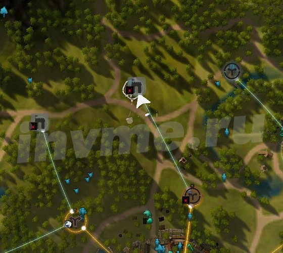
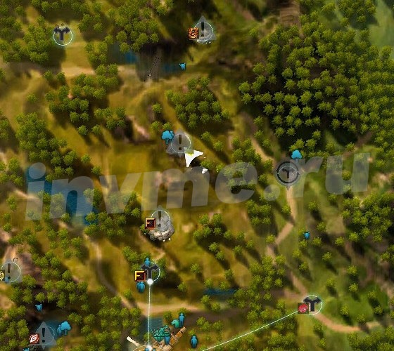
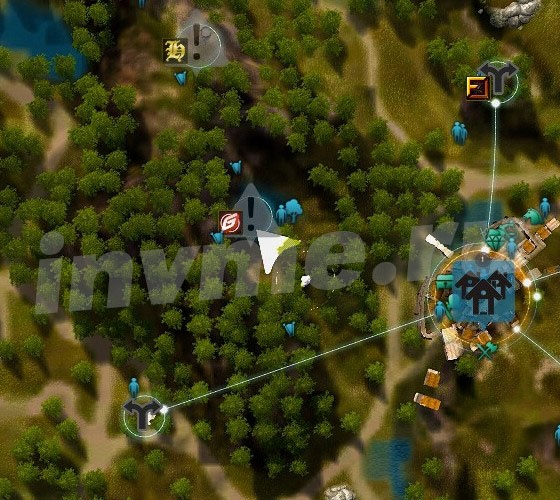
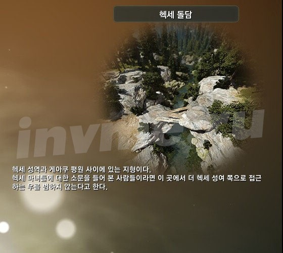
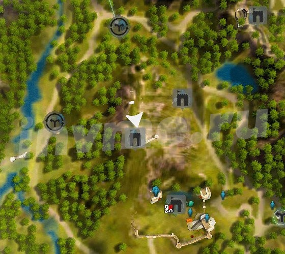
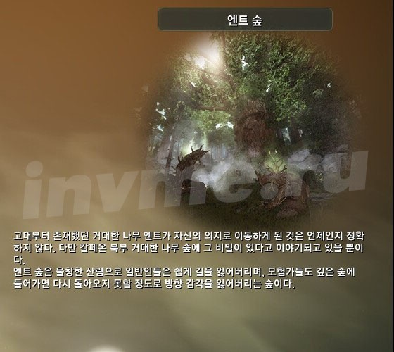
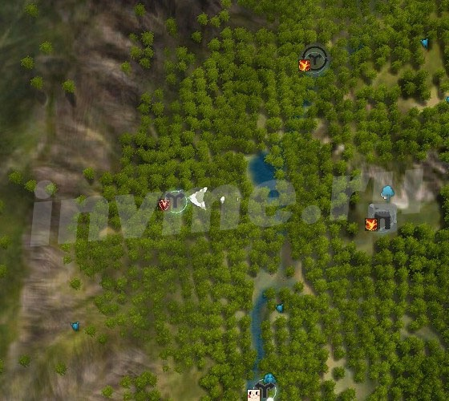
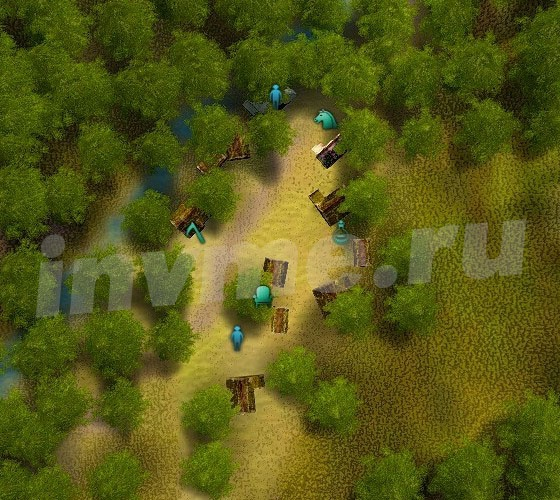
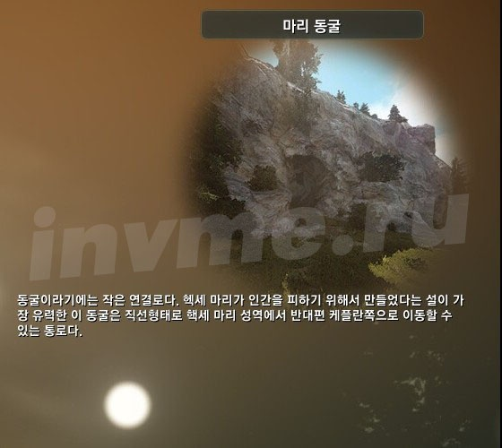
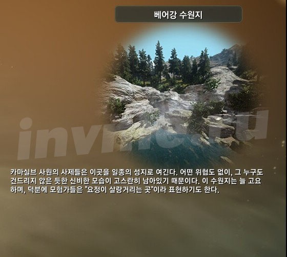

Todo o conhecimento no Deserto Negro. Kalfeon
Mais uma vez, Deserto Negro, e de novo conhecimento sobre os locais. Desta vez vai Kalfeon. Infelizmente, no momento de escrita, ainda não transferida conhecimento para este local, de modo que a guia virou polukoreyskim. Claro que tudo isso será corrigido logo que eu tenha acesso à tradução.
{kind=link}
Outros artigos da série:
A energia e conhecimento em Desert Preto (Guia de Introdução)

pessoas
- Moradores de Balenosa oriental
- moradores Serendii
- noivos urbanas
- Rangers marinas
- Moradores da Western Balenosa
- moradores Kalfeona
- moradores Keplana
- Moradores do sudoeste Kalfeona
- Moradores da mídia
- concessionários misteriosas
- nós de controle (do interior)
- nós de controle (North Ocean)

terreno
{kind=link}
oceano
{kind=link}
ecologia
{kind=link}
Adventures
- Eastern Balenosa Jornal
Adventures in Velii
aventuras no antigo salão de
Aventura Elias Ilha
Adventures in Balenose I
- Jornal Serendii
Adventures in Serendii II
Adventures in Serendii III
Adventures in Serendii IV
Adventures in Serendii V
Adventures in Serendii I
- Jornal Kalfeona
aventuras no norte Kalfeona
Adventures in Keplan
Adventures no sudoeste Kalfeona
Adventures in Kalfeone I
Adventures in Kalfeone (coleta)
Kalfeon e Valquírias
Stories of Darkness
- da revista Meios Adventures na mídia I Adventure in the Media II Adventures na mídia III Acção na mídia IV Adventures na mídia V
{kind=link}
ciência
- história I
- Histórico II
- Economia I
- política I
- cultura I
- teologia I
- Alchemy I
- I Clãs
- política II
- economia II
- cultura II
- cultura III
- teologia II
- Alchemy II
- mundo
Kalfeon
North Kalfeona (4 poder)
Castle Hill Kalfeon | Para o oeste da costa norte Kalfeona Kaya lago. Ou, para 301 pontos e 15 poder da amizade em Fisboro , formador na parte oriental Kalfeona, em uma rua industrial. |  | |
mercado Kalfeona | Mais de 601 pontos de amizade e de energia em 15 Background Marin , treinador perto do portão ocidental Kalfeona. |  | |
favelas Kalfeona | Mais de 301 pontos de amizade e de energia em 15 Background Marin , treinador perto do portão ocidental Kalfeona. | ||
aldeia Florin | Florin Village, na parte norte-oriental da localização. Ou, para 301 pontos e amizade ?? energia a partir de Clara Siciliano , uma vendedora de livros em uma rua comercial Kalfeona. |  | |
| Capital Kalfeon localização. Ou, para 501 pontos e amizade ?? energia de Alfredo Lombardi , localizado na rua comercial da cidade. | ||
| Mais de 301 pontos de amizade e de energia em 15 Jeffrey , localizado no segundo andar do edifício acima dos anões de loja em uma rua industrial Kalfeona. | ||
| Um pequeno posto avançado para o sul-leste de Kalfeona, localizado perto de um enorme arco-gruta na montanha. Ou, para 501 pontos e 15 de poder em Romary , guardas barracas na porta oriental Kalfeona, ao sul do rio. | ||
área Callis |  | Mais de 601 pontos de amizade e de energia em 15 Fisboro , formador na parte oriental Kalfeona, em uma rua industrial. | |
Plain Kalfeona |  | Mais de 301 pontos de amizade e 15 de energia a partir de Wolfgang , Gerenciando site de compras no portão sul Kalfeona. | |
|  | Farm, no norte-oeste da vila do campo de trigo do Norte perto do rio. Ou, para 201 pontos e 15 energia amigável de Luol Grebe no portão ocidental parede Kalf. |  |
Ponte Checkpoint Oldstera |  | No norte Kalfeona perto da ponte Oldstera. Ou, para 401 pontos e 15 poder da amizade no Ar , Shai venda de mudas no norte Kalfeona. | |
| West Farm dilapidado de Kalfeona localizado perto da ponte sobre o rio. |  | |
| campo de Rocky na colina sul de Eferii. Ou, para 701 pontos e 15 poder da amizade em Geybrila , Mestre Estável no Portão Leste Kalfeona, na margem norte do rio. | ||
Sentry pós Eferii | Fort em uma rocha no sul Eferii. Ou, para 301 pontos e 15 poder da amizade em Geybrila , Mestre Estável no Portão Leste Kalfeona, na margem norte do rio. | ||
| Farm sul do campo de trigo do Norte aldeia a nordeste de Kafeona. |  | |
checkpoint única |  | Um pequeno acampamento noroeste do Kalfeona, a oeste da fortaleza assediada por trolls. |  |
| grande caverna-through na montanha a oeste de Florin. Ou para 10 energia em Filgrana , Shaya com uma barba, é nesta caverna. Ou, para 701 pontos e 15 energia amigável de Angela placas Vendedora, Shaya em uma rua industrial Kalfeona. | ||
A exploração infectada | Quinta com vacas doentes, localizado ao norte de Kalfeona. Ou, para 301 pontos e 15 energia amigável de Angela placas Vendedora, Shaya em uma rua industrial Kalfeona. | ||
campo de trigo do Norte | A vila de Nordeste de Kalfeona. Ou, para 301 pontos e 15 poder da amizade em Binstumi , rochas vendedor na parte norte Kalfeona. | ||
cume Karandila |  | harpias liquidação na montanha na parte nordeste do local. Ou, para 701 pontos e 15 poder da amizade em Binstumi , rochas vendedor na parte norte Kalfeona. | |
A cidade portuária de Eferiya | O porto da cidade na parte norte-ocidental da cena. Ou, para 501 pontos e 15 poder da amizade em Ario , lontras na bandeja, com peixes em uma rua comercial Kalfeona. |  | |
Castelo dos Cavaleiros Delpe |  | O enorme portão precipitado harpias, localizadas no vale na entrada Kalfeon. Ou, para 701 pontos e 15 poder da amizade em Ario , lontras têm grande quantidade de peixes no alto rua Kalfeona. | |
| Na parte norte-oriental da localização, na floresta entre as casas destruídas. Ou, para 301 pontos e 15 poder da amizade em Ario , lontras têm grande quantidade de peixes no alto rua Kalfeona. |  | |
Brie floresta Reservados | Ruínas de golems de pedra antigo, situado nas montanhas ao norte do campo de trigo do norte da aldeia. Ou, para 701 pontos e 15 energia amigável de Wolfgang , Gerenciando site de compras no portão sul Kalfeona. |  | |
| NPC perto do enorme verme morto, que está localizado ao sul-leste do campo de trigo do Norte aldeia. Quest começa Malik , o gigante do Norte Campo Alquimista vila trigo. A cadeia começa Norma Reith. Ou, para 401 pontos e 15 energia amigável de Luol Grebe no portão ocidental parede Kalf. | ||
| Caverna no acampamento Hiruto, localizada na parte nordeste do local. Ou, para 701 pontos e 15 energia amigável de Luol Grebe no portão ocidental parede Kalf. | ||
Outpost Delpe |  | Os guardas do campo, localizado ao norte do Castelo dos Cavaleiros Delpe, perto da floresta Hiruto. Ou, para 401 pontos e 15 poder da amizade em Keranoa , ferramentas Vendedor no norte Kalfeona. | |
Reforço trolls | O acampamento é cercado por trolls, localizado ao norte de Kalfeona. Ou, para 401 pontos e 15 poder da amizade em Gardena , gestão de centro comercial no portão norte Kalfeona. |  | |
|  | Mais de 10 energia no Bator , o velho trolls dentro da caverna troll no acampamento na floresta, no norte-oeste de Kalfeona. Ou, para 401 pontos e 15 energia amigável em Alkema , alquimista vasculham Kalfeona. | |
leprosos Terra |  | favelas acampamento para o norte-oeste de Kalfeona. |
{kind=link}
{kind=link}
{kind=link}
{kind=link}
{kind=link}
{kind=link}
{kind=link}
{kind=link}
{kind=link}
{kind=link}
{kind=link}
{kind=link}
{kind=link}
{kind=link}
{kind=link}
{kind=link}
{kind=link}
{kind=link}
{kind=link}
{kind=link}
{kind=link}
{kind=link}
{kind=link}
{kind=link}
{kind=link}
{kind=link}
{kind=link}
{kind=link}
{kind=link}
{kind=link}
{kind=link}
{kind=link}
{kind=link}
{kind=link}
{kind=link}
{kind=link}
{kind=link}
{kind=link}
{kind=link}
{kind=link}
Keplan (4 poder)
| Mineração cidade na parte sudeste da Kalfeona. |  | |
Raputa Tart |  | Interseção de três estradas, localizado a leste de Fort Trina fortaleza sitiada lagartos. | |
| Canyon com um par de casas em ruínas, localizada entre o campo ea terra Raptors Sonil de gigantes. | ||
|  | Casa só no monte, entre as minas norte de Keplana. |  |
pedreira abandonada | Mina na montanha norte de Keplana. | ||
Estrada para a pedreira |  | Crossroads para o norte-leste de Keplana localizado para minas perto da fronteira com Serendiey. |  |
caverna glutonov | A maioria caverna gruta, sem um teto, localizado nas montanhas ao noroeste de Keplana. |  | |
| portão oeste bloqueado |  | Zastava fechou um portão, localizado na parte sudeste da Kalfeona, perto da fronteira com Serendiey. Ou, para 301 pontos e 20 poder da amizade em Germer , gestão anão site de compras Keplana. | |
Farm Gianni | Fazenda com plantação de erva, localizado atrás da montanha ao sul-leste de Keplana. | ||
Marcos Keplana | Forquilha na estrada ao leste de Keplana. Ou para 10 energia em Hunter Barante localizado no mesmo garfo, cavalgando o siri. | ||
vale Dzhihaku | Plains antes das montanhas na terra de gigantes. Conhecimento é dada em uma escada de andaimes Bose Pedra cabeças gigantes , grandes bustos de pedra esculpida na rocha. Ou para 10 energia de uma mesma cabeça de pedra. | ||
fechado Quarry |  | Mina abandonada sul de Keplana. | |
|  | Zastava fechou uma porta, situada na encosta leste da montanha, localizado no sul de Kalfeona. | |
acampamento Sonil | Big camp lagartos, localizado no sul da parte Kalfeona, sul de Fort Trina fortaleza sitiada lagartos Sonil. |  | |
| Mina em uma montanha na parte sudeste da Keplana. | ||
fazenda abandonada Marnie | fazenda destruído com monstros de lama, localizados na floresta leste de Kalfeona. |  | |
|  | Montanha sem caroço minas de longe para o norte de Keplana, sul do Castelo dos Cavaleiros Delpe. | |
Farm Ober | Farm sul de Kalfeona, Amarelo-saqueada. |  | |
caixão |  | mina abandonada com aranhas e golems, localizada ao norte de Keplana. | |
| ao sul da fazenda de Kalfeona localizado perto da ponte sobre o rio. |  | |
Frontier Merten |  | A ponte sobre o rio entre as terras dos gigantes da floresta e com uma enorme cemitério, localizado na parte sul do local. Ou para 10 energia a partir de corujas perto da ponte. |  |
| Fazenda com vacas, localizado a leste da Kalfeona, na margem sul do rio, perto da ponte. | ||
laboratório Marnie | Laboratório no topo da montanha com um grande arco-gruta. Ele está localizado atrás de um labirinto cheio de quimeras e robôs. | ||
Sinal Torre Trina | Um pequeno forte no topo da montanha, ao sul de Kalfeona. |  | |
| Fortaleza dinossauros Sitiada Exército Sonil na encosta sul da montanha, ao sul de Kalfeona. | ||
Sonil fronteira | Ponte de suspensão através do rio, localizado ao sul-oeste de Fort Trina fortaleza sitiada lagartos. | ||
| O primeiro acampamento gigante |  | Canyons nos gigantes da montanha, localizado ao sul-leste de Keplana. |  |
{kind=link}
{kind=link}
{kind=link}
{kind=link}
{kind=link}
{kind=link}
{kind=link}
{kind=link}
{kind=link}
{kind=link}
{kind=link}
{kind=link}
{kind=link}
{kind=link}
{kind=link}
{kind=link}
{kind=link}
{kind=link}
{kind=link}
{kind=link}
{kind=link}
{kind=link}
{kind=link}
{kind=link}
{kind=link}
{kind=link}
{kind=link}
{kind=link}
{kind=link}
{kind=link}
{kind=link}
{kind=link}
{kind=link}
{kind=link}
{kind=link}
{kind=link}
{kind=link}
Southwest Kalfeona (4 poder)
North Lake Kaya | A grande ilha no meio do lago Kaya. Ou, para 351 pontos e 20 energia amizade em um-água-Portador de água , na bóia de água grossa perto da marina campo de South Port Kaya. | ||
| North Peak Kaya |  | No topo da colina, que está localizado ao sul-oeste de Kalfeona. Ou, para 201 pontos e 20 energia amizade em um-água-portador de água , um círculo de espessura na água perto da marina campo de South Port Kaya. | |
| A entrada para a cabana Fonelya | A oeste de Fort Trina fortaleza lagartos sitiados, por dois rios nas montanhas. Ou, para 371 pontos e 20 poder da amizade em Sain , Elf vende armas no acampamento dos elfos nas árvores. | ||
cemitério Hex | Perto de uma pequena casa em um grande cemitério na parte sul do local. Ou, para 451 pontos e 20 poder da amizade em Ruensli , Elf vende armas no campo de elfos nas árvores. |  | |
Urso River Valley |  | Crossroads com um carregador de água de água de espessura, localizado ao norte do urso vila. Ou, para 201 pontos e 20 poder da amizade em Sain , Elf vende armas no acampamento dos elfos nas árvores. |  |
| fazenda rena localizado nas montanhas a leste do acampamento orc verde (profissional de saúde) e ao oeste de Fort Trina fortaleza sitiada lagartos. Ou, para 801 pontos e 20 poder da amizade em Ruensli , Elf vende armas no campo de elfos nas árvores. | ||
| Capela na aldeia abandonada em uma rocha na parte sul do vasto cemitério, localizado no sul Kalfeona. Ou, para 201 pontos e 20 poder da amizade em Ruensli , Elf vende armas no campo de elfos nas árvores. | ||
| posto abandonado, localizado na floresta ao sul-oeste do urso aldeia. | ||
South Lake Kaya |  | Mais de 591 pontos de amizade e de 20 energia em um-água-portador de água , um círculo de espessura de água no acampamento de resgate perto do cais do porto sul Kaya. | |
|  | Cabeça grande Ent localizado na parte ocidental da floresta dos Ents, no oeste do mosteiro abandonado. |  |
Castelo Kalfeon | Big Castelo está localizado em frente ao rio para o oeste de Kalfeona. | ||
vila urso | a localização da aldeia no sul, localizado em um vale perto de um rio. |  | |
aldeia Trent | Longhorn City, localizado na parte sul-ocidental da localização, na parte sul da floresta dos Ents. |  | |
posto de guarda florestal |  | A pequena aldeia de duendes, localizado em árvores da floresta na parte sul-ocidental da localização, ao sul-leste da cidade de Trento. Ou, para 201 pontos e 20 poder da amizade em Indri , instrumentos vendedora suportar aldeia. | |
Hut Lumberjack |  | Cabine de madeira na floresta ao norte-oeste da cidade de Trento. Ou, para 541 pontos e 20 energia amigável de Bebel , guardas barracas Trento. | |
Hut Dobara |  | Algumas cabines de registro em ruínas com goblins que estão na floresta ao norte-oeste do mosteiro, Sudoeste abandonado do lago Kaya. Ou, para 201 pontos e 20 energia amigável de Bebel , guardas barracas Trento. |  |
|  | Uma plantação de algodão pequena na encosta leste da montanha, localizada na parte norte da enorme cemitério. Para chegar a ele, você pode by-pass-through caverna na parte norte do cemitério. Ou, para 421 pontos e 20 energia amigável de Augusto , prefeito da cidade de Trento. |  |
| Uma grande casa de log com os goblins, localizado na floresta, localizada na parte sudoeste do lago Kaya. | ||
| Floresta ocidental Kalfeona | Um grande buraco no bosque a oeste do lago Kaya. Ou, para 761 pontos e 20 poder da amizade em Victoria , gerenciando a unidade de negociação da cidade de Trento. | ||
A água acampamento |  | água assentamento na parte sudoeste do lago Kaya. Ou, para 421 pontos e 20 poder da amizade em Victoria , gerenciando a unidade de negociação da cidade de Trento. | |
Farm Gabino |  | Exploração agrícola na parede ocidental Kalfeona. Ou, para 201 pontos e 20 poder da amizade em Victoria , gerenciando a unidade de negociação da cidade de Trento. |  |
South Port Kaya |  | O acampamento está na costa oriental do lago Kaya, localizado na parte sudoeste da localização. Ou, para 671 pontos e 20 poder da amizade em Dalin , um pequeno hiruto localizado perto da cidade de Trento alquimista. |  |
| Árvore velha grande no pântano ao sul-oeste de Fort Trina fortaleza lagartos sitiados, Nordeste do urso aldeia. Ou, para 201 pontos e 20 poder da amizade em Dalin , um pequeno hiruto localizado perto da cidade de Trento alquimista. |  | |
aldeia Cryo | Uma grande árvore com uma cavidade lontras no interior, localizada perto do lago na floresta entre a cidade de Trento e do urso aldeia. | ||
mosteiro em ruínas | Monastério abandonado em uma montanha na parte norte da floresta dos Ents. | ||
pós ratam Sentry | O acampamento está em uma colina perto da estrada para o sul-leste do lago Kaya. | ||
estacionamento ratam | orcs acampamento Verdes, ao sul do lago Kaya. Ou, para 301 pontos e 15 de poder em Romary , guardas barracas na porta oriental Kalfeona, na margem sul do rio. |  | |
| As origens do Bear River |  | A fonte do rio nas montanhas ao norte-noroeste do urso aldeia. | |
North Port Kaya | Acampamento com cais, localizado na parte norte-oriental do lago Kaya. |
{kind=link}
{kind=link}
{kind=link}
{kind=link}
{kind=link}
{kind=link}
{kind=link}
{kind=link}
{kind=link}
{kind=link}
{kind=link}
{kind=link}
{kind=link}
{kind=link}
{kind=link}
{kind=link}
{kind=link}
{kind=link}
{kind=link}
{kind=link}
{kind=link}
{kind=link}
{kind=link}
{kind=link}
{kind=link}
{kind=link}
{kind=link}
{kind=link}
{kind=link}
{kind=link}
{kind=link}
{kind=link}
{kind=link}
{kind=link}
{kind=link}
{kind=link}
{kind=link}
{kind=link}
{kind=link}
{kind=link}
Como de costume, eu vou ser muito grato por todas as atualizações, correções, adições e apenas comentários.
Parece-me ter que escrever a cada NPC é difícil obter a sua conhecimento.
Ele foi para o " fundo Marin " - apenas horror ... Mas em primeiro lugar é Breharo ....
Lembro-me em um par de semanas, a Coreia, eu acenei NPCs meia em Kalfeone até não entender que o conhecimento que já tenho.
Background Marin superou Breharo IMHO ...
No fundo, pelo menos, uma certa estabilidade lá, um pouco que lhe restava. Breharo geralmente tedioso ... para empurrá-lo sem rodeios, pressionando F1 (os nervos não é suficiente)
Conhecimento de "Lake Kaya" nome NPC <Gerenciamento de oficina> Jeffrey
Na verdade, mudou a tradução, eu tê-lo mesmo com o PTA. Muito obrigado, corrigido.
então eu não sei como seu nome, mas os desenvolvedores agora Geoffrey ahah visto não gostava do nome amerikanskoe.Hotya nenhuma escrita nele e Geoffrey no circuito ao procurar por Joffrey é para aqueles que querem avtoputёm chegar
Sim, nós temos a mesma excelente localização. 10 NPCs por cento têm dois nomes, um acima da cabeça, o segundo em conhecimento. Eu tento me concentrar nos nomes na lista de conhecimento. De acordo com ele, no artigo aponta.
Jofre - Jeffrey
Oh, eu já à frente.
No que respeita à dificuldade na obtenção de conhecimentos do NPC. Como você <Merchant> Wolfgang, que dá conhecimento "Plain Kalfeona" para 301 amizade? Este companheiro figuras simpatia de todo o conhecimento que eu Teologia zero. E não há maneira de executar a tarefa, mas para gerar interesse ou não. Acumule simpatia é simplesmente impossível.
Sim, ele é muito legal. Mas ele, pelo menos, apenas 301 conhecimento Amizade. Em 5 horas "nalezhat" bed and mão "namahat".
Tenho a impressão de que ele é buggy, ou seja, o primeiro curso de um dia em seu conhecimento dos parâmetros normais de juros sobre as seguintes passagens em todos os 0. Como em outros servidores, até à data, qualquer um?
PS equivocada - que cada tentativa - wild aleatório
Sim, todos os NPCs desde Kalfeona assim. A propagação da simpatia de 15 a 60 podem ser. Apenas alguém sorte e eles nem sequer notá-lo, mas alguém cada vez que 0% de chance de proc.
Este é cara normal Fisboro 2 vezes jogou com ele em 3 tentativas, a 600 pontos em seu bolso))))
North Kalfeona - caverna varagonov, cadeia de busca começa Malik não é um alquimista, ea anfitriã Norma Reith campos de trigo, no campo de trigo do Norte mesmo nó. Ele envia para Javier, pois ele já tinha enviado para o alquimista Malik.
Só fiz =) Obrigado por seu trabalho, use esta oportunidade. É realmente ajuda.
Obrigado pela informação, em breve abrir um novo servidor, eu tento verificar novamente todas as suas observações.
No conhecimento das " origens do Bear River ", em Kalfeone, proprietário da Baskvin dá o trabalho para o nível 41. Configuração é chamada: "[Isledovanie] As origens do rio do urso."
No conhecimento do " glutonov caverna " em Kalfeone, comerciante Garden dá o trabalho para o nível 41. Configuração é chamada: "[Isledovanie] glutonov caverna".
No conhecimento do " lenhador cabana ", o campo de trigo do Norte Alquimista Malik dá o trabalho para o nível 41. Configuração é chamada: "[Isledovanie] lenhador cabana."
PS Mas, no nível 41, eles me aberto, o mais provável é que eles estão após a primeira missão na cadeia de busca Martha, o campo de trigo do Norte.
Curiosamente, estes postos de trabalho nunca será visto novamente. Provavelmente porque todos aberta anteriormente.
Talvez eles tenham posto em novas versões. A única coisa para dar-lhes 50 pontos de influência, ou melhor nedoochkov. Além disso, a rota para ele não é construído. É compreensível, o trabalho vai secção "Pesquisas" de. E então há um problema com estas tarefas que preencham todos eles, é necessário, no início, todos eles obtê-lo. Caso contrário, fazer uma tarefa pootkryvali outros lugares e, portanto, não conseguir outros empregos.
Aqui está, além disso:
No conhecimento da " Floresta Ents Hidele" na praça, Fuya dá o trabalho para o nível 41. Configuração é chamada: "[Isledovanie] Floresta Ents."
No conhecimento do " Shack Fonelya " em Hidele, comerciante Suite oferece o trabalho ao nível 41. Configuração é chamada: "[Isledovanie] Fonelya Shack".
Porque eu ainda não descoberto "Árvore Rui" esquerda, logicamente, também, em algum lugar tem que estar no seu trabalho, mas ainda não vi.
Eu encontrei depois de seu último trabalho fez não conhecimento aberto "Árvore de Rui." Mas parece um bug neste conhecimento é dado duas tarefas ao mesmo tempo, dois NPC diferente, também localizado ao lado do outro. Além disso, você pode tomar as duas tarefas simultaneamente. E assim:
No conhecimento da " Árvore da Rui " no campo ocidental, os guardas dar o trabalho para o nível 41, uma vez dois soldados, além disso, você pode tomar as duas tarefas simultaneamente. Configuração é chamada: "[Isledovanie] Rui Tree":
- 1 - soldados Jamie, de pé em frente ao portão oeste, do lado de fora, no início do jogo, temos de enviá-lo nuvem;
- 2 - A soldados Constante pena pozati em primeiro lugar, mas, por outro lado do portão, para o interior do acampamento em frente à tenda, que é o filho de uma mulher idosa com uma fazenda da Toscana, com ele, também, foi a tarefa.
Parece que os desenvolvedores não estão muito pensado para a localização destes postos de trabalho. Ou ter-se esquecido de onde, acrescentaram.
Bem, com a lógica do jogo todos os problemas, mas depois de uma atualização global, mostra que os desenvolvedores já não me lembro onde eles têm que. Em princípio, é claro, o volume do conteúdo é simplesmente enorme, e mesmo em linha. Os mesmos guardas do campo ocidentais costumavam ser ezhednevki a coleção de ganchos e corretamente na captura agora substituiu-o com uma tarefa mais lógica, como "Coleção porvanyh redes", que agora é simplesmente remexer em torno às margens redes Valea. Mas o ícone da tarefa de substituir o esquecido, e ainda ostenta seu gancho. No Cryo em Velii podem ser trocados novilhos, cavala, Mosca estrelado por tokens de algas são agora removidas essa possibilidade. Ele também foi diários "apanhar feio", algo assim, ou seja, para pegar Sturgeon, é agora substituído por qualquer lá Paltsetera ou qualquer que seja o seu nome é, além disso, no livro do pescador, ele vai com um nome diferente, mas o ícone tarefa de modo substituir o esquecido até ontem minipatcha ainda estão usando o esturjão.
Cool, entregando o trabalho " Árvore Rui " Soldier Constant, nas guardas do campo ocidentais, ele me deu a seguinte tarefa:
No conhecimento " Colina Quint " nas guardas do campo ocidentais, soldados Constans dá o trabalho para o nível 41. Configuração é chamada: "[Isledovanie] Colina Quintus."
Isto é, a completa falta de lógica nestas tarefas. Colina Quint, que são, por definição, aberto conhecimento anterior Árvore Rui, como nós atravessamos a história envia Gorgas e depois Preto Dearie. E essa tarefa é agora evidente, que todos seção de conhecimentos Mestnost-> Kalfeon lá o trabalho, mas com o Kalfeonom do Norte, claramente, o problema em conseguir estes postos de trabalho, como muitos de seu conhecimento que temos antes de começar a executar a cadeia de busca de Martha que, como como, e abre-lhes :(?
E se há uma tarefa para toda a seção Kalfeona, é lógico supor que deve haver empregos e Balenos com Serendiey? ..
Ha ... em Balenose Serendii e também têm um nível de missões [Isledovanie], mas eles são como parte de outras missões. Então Velii, chamou a busca pelo conhecimento da seção "Mestnost-> Balenos-> Farm Lodges ." Ele vem como parte da cadeia de produção, a quarta consecutiva, o que dá um ferreiro Tranan Anderfo em Velii na fazenda invenstirovaniyu Logie. Especificando que chamou de "(4) Os sítios de ligação", e na lista de tarefas, ele vai como "norte-Lodges" e é marcado com um de nível de emprego ícone [pesquisas]. Se, antes, não teria encontrado um emprego Isledovanie, nem quando ele não tinha adivinhado :)
Em lojista Keplana amizade pode obter:
200 - Gruta glutonov
500 - Estrada para a pedreira
700 - Mina Keplana
Christina Sertseri
No Código grega, cristais mercantes no Keplane:
200 - Vale Dzhihaku
600 - Bairros Keplana
800 - Farm Gianni
Em Shourd, comerciante armadura em Keplane:
300 - Fort Trina
700 - Trina Farol (o mais provável é "Signal Torre Trina")
Em Kant, o alquimista Keplana:
200 - Laboratório Marnie
400 - Rancho Faars
700 - Parede de pedra Hex ( "Frontier of the Dead")
Bartus, um noivo em Keplane
200 - Oji Casa
400 - Canyon Dane
800 - Crossroads Tart
Andria, armeiro Keplana:
200 - Camp Sonil
400 - gigantes Camp (talvez "O primeiro acampamento dos Gigantes")
700 - Sonil Border
AIBO DeRosa, traktirshik em Keplane:
300 - Passar Evi
500 - Ruínas da exploração agrícola Marnie
800 - Colina Keplan
Germer, comerciante Keplane:
300 - Bloqueado portão oeste
Ireli Leach, NPCs em Keplane:
300 - Sinal do farol ( "Trina Gate")
700 - pedreira Closed